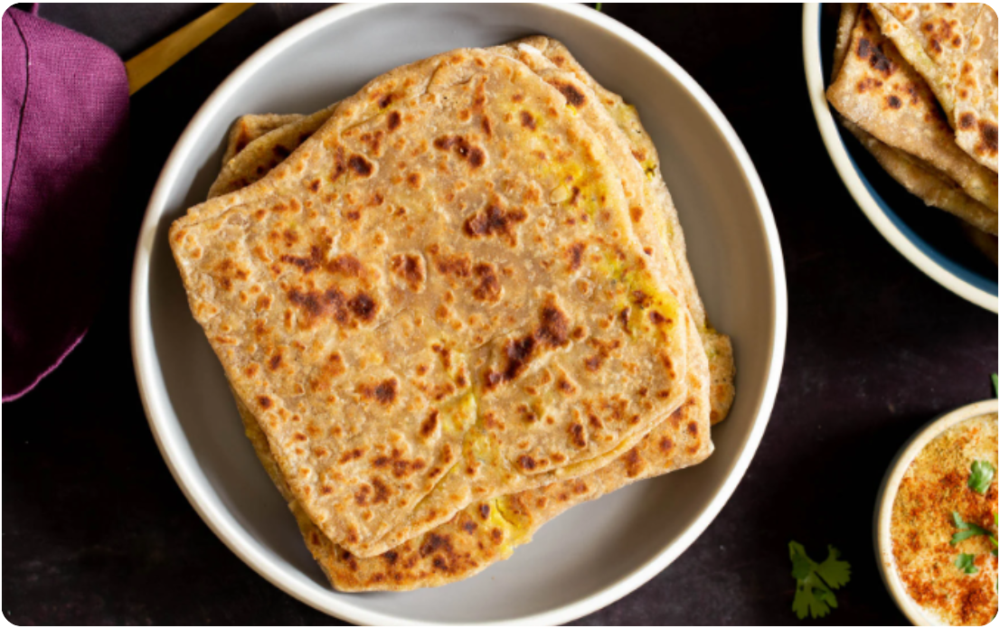
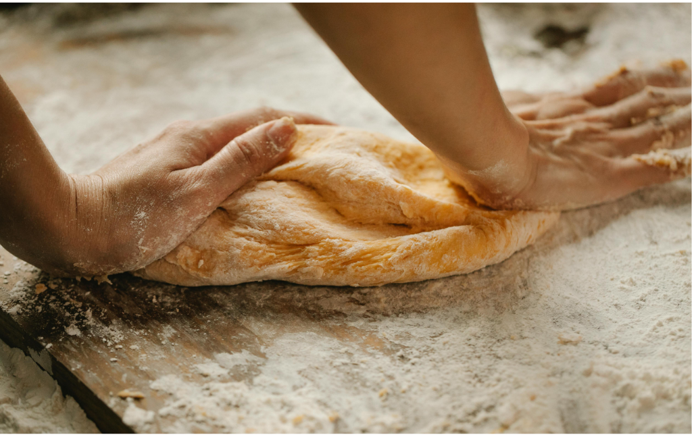
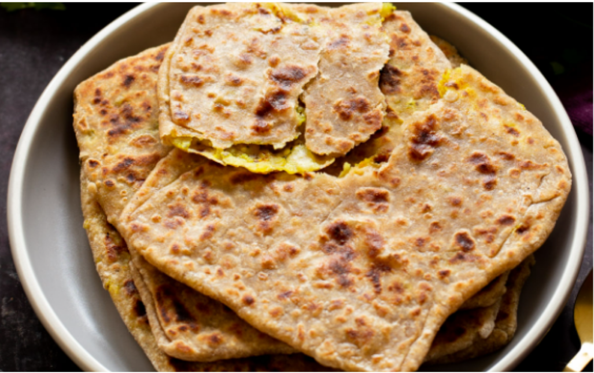
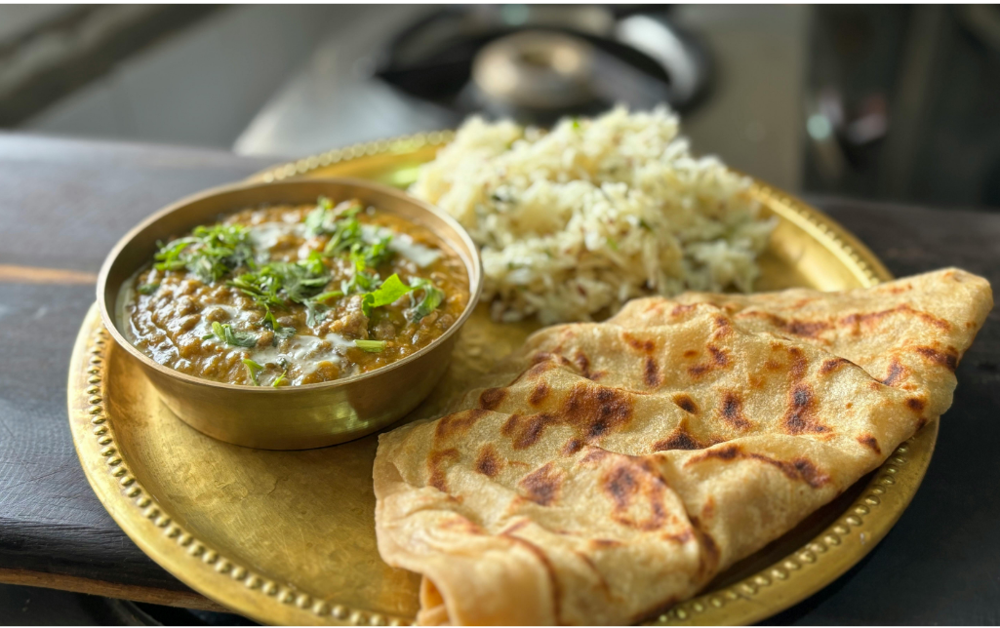

TIME: 30 minutes
SERVINGS: 10
SPECIAL EQUIPMENT: cooking pan, rolling pin
Ingredients
Instructions
- To a bowl, add the flour, salt, and spices, and mix well.
- Heat one cup of water until almost boiling. Let it sit for 2 minutes to cool and then add it to the flour mixture.
- Add 2 teaspoons of ghee and another 1/4 cup of water. Press and mix.
- Use your oiled hands to bring the dough together. Add a couple more tablespoons of water if needed.
- Once the dough comes together, knead for a couple more seconds. Brush one teaspoon of oil on the dough, cover it with a napkin or a plate, and let it sit for 15 minutes.
- In the meantime, prepare the filling. Cook your potatoes if you haven’t already. Transfer the potatoes to a bowl to cool for a little bit, then peel and mash them.
- Add the turmeric, salt, and spices, and the optional onion, chili, and cilantro if using, and mix well. Mix and mash really well and set aside for a few minutes.
- Take about 2-3 tablespoons of the potato filling and place it in the middle of the flatbread.
- With a rolling pin, roll it gently. When rolling, keep the edges of the dough thinner and the center thicker.
- Once the square is about 6-7 inches, set it aside.
- Heat your pan over medium-high heat. Once the pan is hot, place the flatbread onto the pan and cook for 30 seconds or until golden brown. Flip to cook the other side and cook for another 30 seconds. Drizzle a few drops of ghee, flip it, press, and cook for about 1 minute or so.
- Repeat with the rest of the flatbreads until both sides are golden brown. Set aside on a plate or in a storage container.